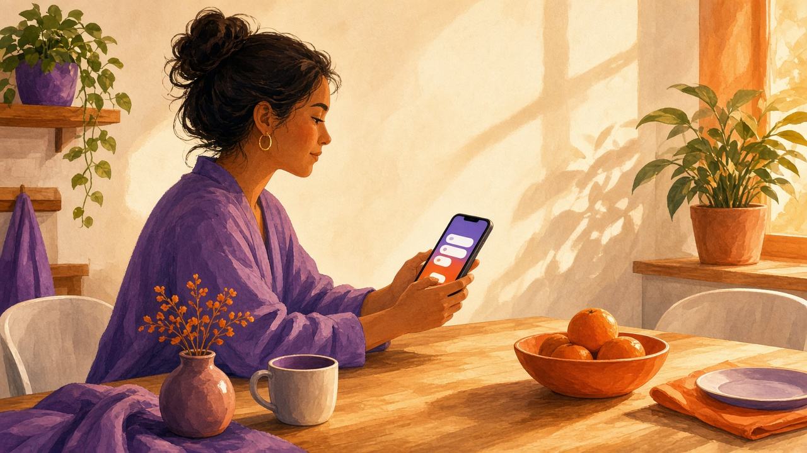
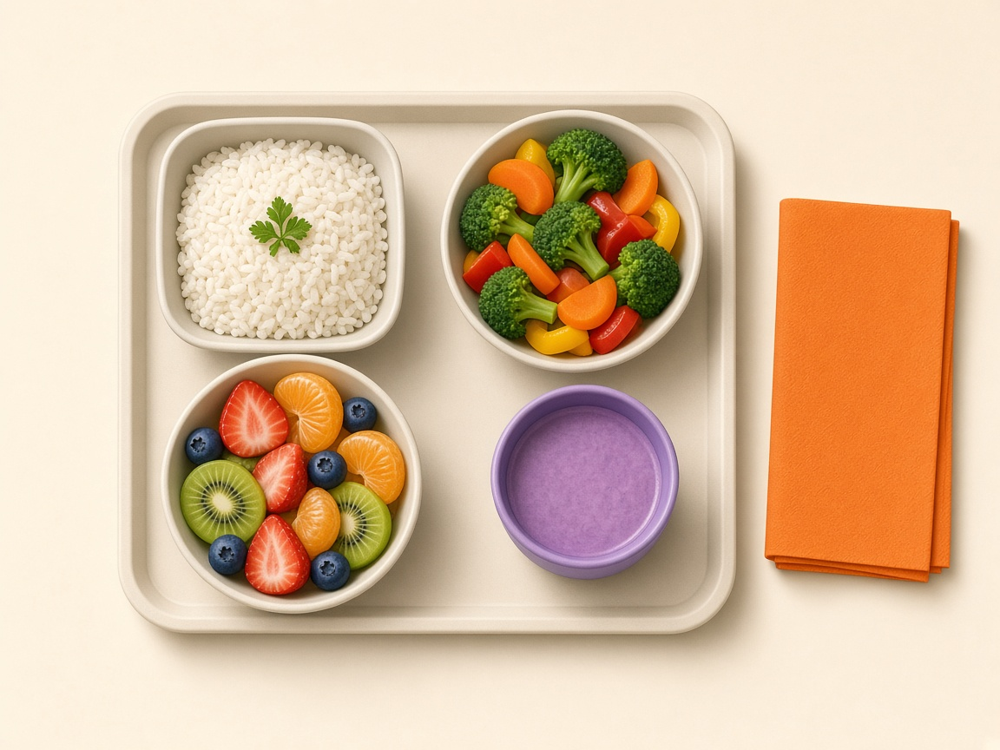
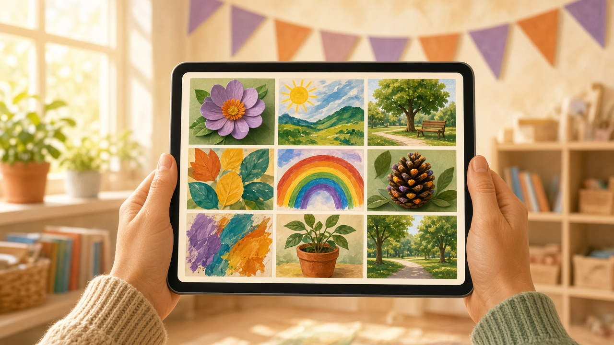
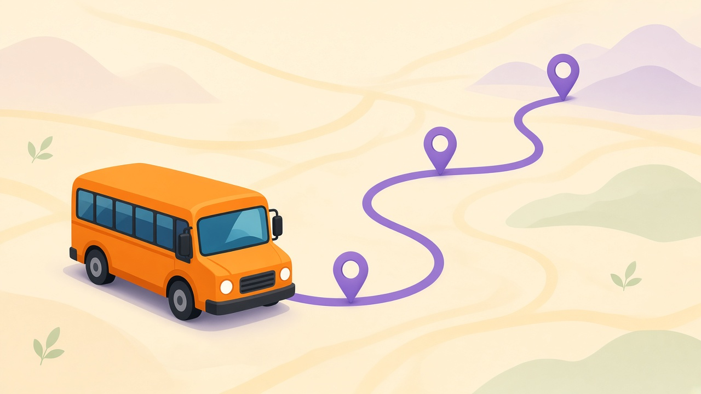

Η Ονειροχώρα κρατά τη μέρα του παιδιού, το διατροφολόγιο, το διαθεματικό, τις εργασίες, τις εκδρομές, το σχολικό και τα οικονομικά. Η γραμματεία δουλεύει στο web. Γονείς, παιδαγωγοί και οδηγός έχουν εφαρμογή σε iPhone και Android, με push ειδοποίηση όταν κάτι τους αφορά.
Πρόσφατη ενημέρωσηΜία, η τελευταία, για κάθε παιδί
Εκδήλωση 1
Σχολικό Ναι
Explainer
Δες τις λειτουργίες, όπως τις ζει το σχολείο.
Εννέα σύντομες σκηνές. Πατάς παύση ή πηγαίνεις κατευθείαν στο κεφάλαιο που σε νοιάζει.
0:00
Γονέας · 07:30
Η αρχική λέει μόνο ό,τι χρειάζεται σήμερα.
Πρώτα τα παιδιά και η επερχόμενη συνάντηση. Μετά η ενημέρωση της ημέρας και το διατροφολόγιο. Από τις παλιές ενημερώσεις μένει η τελευταία ανά παιδί. Από τις εκδηλώσεις μένει μία κάρτα και το κουμπί «Εμφάνιση όλων».

Το πρωί ανοίγει την εφαρμογή, όχι το Viber.
Παιδαγωγός · 13:40
Η ενημέρωση της ημέρας φτάνει ως push.
Ο παιδαγωγός γράφει διάθεση, δεκατιανό, μεσημεριανό και ύπνο για το συγκεκριμένο παιδί. Ο γονέας παίρνει ειδοποίηση στο iPhone ή στο Android. Αν την ανοίξει, πέφτει πάνω στην ενημέρωση. Αν τη χάσει, μένει και στο ιστορικό της εφαρμογής.
ΟνειροχώραΙρίδα: χαρούμενη, έφαγε τα περισσότερα
Αστεράκια · σήμερα
ΙρίδαΧαρούμενη · δεκατιανό: τα περισσότερα · ύπνος 40′
ΑλέξηςΉρεμος · μεσημεριανό: τα μισά
Γραμματεία → γονέας
Το διατροφολόγιο ανεβαίνει μία φορά.
Η γραμματεία βάζει το μενού της ημέρας στο web. Στην αρχική του γονέα εμφανίζεται κάτω από την ενημέρωση, μία φορά για όλα τα παιδιά. Δεν ξαναστέλνεται ως μήνυμα σε κάθε οικογένεια.

Ρύζι, λαχανικά, φρούτο. Ο γονέας το βλέπει πριν ρωτήσει τι έφαγε.
Εκδρομή · μία μέρα πριν
Συναίνεση, ώρα, σχολικό και πληρωμή.
Η κάρτα γράφει μέχρι τι ώρα πρέπει να είναι στο σχολείο και αν εκείνη τη μέρα βγαίνει το σχολικό. Ο γονέας πατά Συναινώ ή Όχι. Αν η εκδρομή έχει κόστος, αμέσως μετά βλέπει ότι η πληρωμή τακτοποιείται στη γραμματεία. Την προηγούμενη μέρα έρχεται υπενθύμιση.
Εθνικός Κήπος
Παρασκευή · μέχρι 08:30 · το σχολικό λειτουργεί
Συναινώ
Όχι
Μετά τη συναίνεσηΕκκρεμεί η πληρωμή στη γραμματεία.
Παιδαγωγός · μετά την εκδήλωση
Το φωτογραφικό ανεβαίνει στην ίδια εκδήλωση.
Ο εκπαιδευτικός προσθέτει τις φωτογραφίες στην εκδρομή ή στη γιορτή. Ο γονέας ανοίγει το άλμπουμ από την κάρτα της εκδήλωσης και τις κατεβάζει στο κινητό. Δεν ψάχνει σύνδεσμο σε ομαδική συνομιλία.

Κατασκευές, αυλή, βόλτα. Το άλμπουμ μένει πάνω στην εκδήλωση.
Οδηγός · πρωί
Το σχολικό έχει λίστα και ζωντανή θέση.
Ο οδηγός βλέπει ποιο παιδί παραλαμβάνει, σε ποια στάση και ποιος το παραδίδει. Η θέση του λεωφορείου φεύγει από το κινητό του και φαίνεται στον γονέα που έχει σχολικό. Αν η γραμματεία κλείσει το δρομολόγιο, και οι δύο βλέπουν τον ίδιο λόγο.

Διαδρομή, στάσεις και θέση. Ο γονέας δεν τηλεφωνεί στον οδηγό.
Υγεία
Φάρμακο και ερωτηματολόγιο μένουν χωριστά.
Το φάρμακο έχει δόση, συχνότητα και ημερομηνίες. Ο γονέας δίνει ή αρνείται τη συναίνεση. Ο παιδαγωγός βλέπει μόνο ό,τι είναι ενεργό. Στην κάρτα του παιδιού, το κουμπί Φάρμακο ανοίγει μόνο τα φάρμακα και το Ερωτηματολόγιο μόνο τις φόρμες.
Υγεία · Ιρίδα
Σιρόπι5 ml · δύο φορές · συναίνεση: ναι
Ερωτηματολόγιο εισαγωγήςΣυμπληρωμένο
Τάξη · μήνας
Εργασία στο παιδί, διαθεματικό στην τάξη.
Ο παιδαγωγός αναθέτει εργασία σε συγκεκριμένα παιδιά. Ο γονέας τη βλέπει μόνο αν αφορά το δικό του και παίρνει ειδοποίηση. Το διαθεματικό του μήνα γράφεται μία φορά για την τάξη και εμφανίζεται ως τίτλος στην αρχική.
Αστεράκια
Διαθεματικό ΟκτωβρίουΤο φθινόπωρο στο πάρκο
Εργασία · ΙρίδαΦέρε ένα φύλλο από βόλτα
Γραμματεία · οικονομικά
Χρωστάει, λεπτομέρειες, απόδειξη.
Στην κάρτα γράφει Χρωστάει ή Δεν χρωστάει και από κάτω το σύνολο. Το κουμπί Λεπτομέρειες ανοίγει τι εκκρεμεί: μηνιαία, γραφική ύλη, εκδρομή. Ο γονέας κατεβάζει την απόδειξη του συστήματος ή το αρχείο που ανέβασε η γραμματεία από άλλο πρόγραμμα.
ΜαθητήςΟικονομικάΓενικά
Χρωστάει85,00 €
Οκτώβριος70,00 €
ΑπόδειξηΛήψη PDF
Τρία πρόσωπα, ένα αρχείο
Το web κρατά το γραφείο. Οι εφαρμογές κρατούν τη μέρα.
01
Web γραμματείας
Μαθητές, γονείς, τάξεις, προσωπικό, διατροφολόγιο, εκδηλώσεις, σχολικό, οικονομικά, κανονισμοί και ειδοποιήσεις. Η κάρτα του παιδιού δείχνει με μία ματιά αν χρωστάει, αν έχει σχολικό και πόσες δραστηριότητες έχει.
02
Εφαρμογή γονέα
Αρχική χωρίς ατέλειωτο σκρολ: συνάντηση, ενημέρωση σήμερα, τελευταία ενημέρωση ανά παιδί, μία εκδήλωση ανά παιδί. Από κάτω πληρωμές, αποδείξεις, μηνύματα και το σχολικό.
03
Εφαρμογή προσωπικού
Ο παιδαγωγός γράφει την ημέρα και τις γιορτές της τάξης. Ο οδηγός βλέπει το δρομολόγιο και στέλνει τη θέση του. Ο ιδιοκτήτης ανοίγει μόνο αναφορές.
Τι περιλαμβάνει
Κάθε κομμάτι της χρονιάς μένει πάνω στο παιδί και φτάνει στον σωστό ρόλο.
Το μενού της ημέρας, όπως το βλέπει ο γονέας.
Διατροφολόγιο
Η γραμματεία ανεβάζει το μενού της ημέρας. Ο γονέας το βλέπει στην αρχική, μία φορά για όλα τα παιδιά, χωρίς να το ψάχνει σε μήνυμα.
Αν το μενού αλλάξει το πρωί, η αλλαγή φαίνεται αμέσως. Δεν μένει παλιά φωτογραφία σε παλιά συνομιλία.
ΓραμματείαΓονέας
Διαθεματικό κάθε μήνα
Κάθε τάξη έχει το θέμα του μήνα. Ο παιδαγωγός το γράφει, ο γονέας βλέπει τον τίτλο στην αρχική, και η γραμματεία το κρατά στο αρχείο της τάξης.
Παράδειγμα: «Οκτώβριος · το φθινόπωρο στο πάρκο». Αλλάζει τον επόμενο μήνα, χωρίς νέα ανακοίνωση για κάθε οικογένεια.
ΠαιδαγωγόςΓονέαςΓραμματεία
Εργασίες για κάθε μαθητή
Ο παιδαγωγός αναθέτει εργασία σε συγκεκριμένα παιδιά. Ο γονέας τη βλέπει στο παιδί του και παίρνει ειδοποίηση. Δεν είναι μία γενική ανακοίνωση για όλη την τάξη, αν δεν το θέλει ο εκπαιδευτικός.
Η ειδοποίηση γράφει το όνομα του παιδιού και τον τίτλο της εργασίας. Ανοίγοντάς την, ο γονέας πέφτει στην κάρτα του παιδιού.
ΠαιδαγωγόςΓονέαςΓραμματεία
Δραστηριότητες
Χορός, αθλητισμός και ό,τι άλλο τρέχει εκτός τάξης. Στην κάρτα του παιδιού φαίνεται ο αριθμός. Η λίστα, μία προς μία, ανοίγει στην καρτέλα Δραστηριότητες.
ΓραμματείαΓονέας
Ευρήματα
Όταν βρεθεί μπουφάν ή μπουκάλι, η γραμματεία ή ο παιδαγωγός ανεβάζει φωτογραφία και μήνυμα. Ο γονέας το βλέπει στις ενημερώσεις της αρχικής.
Κάθεται δίπλα στην τελευταία ενημέρωση ημέρας, όχι σε ξεχωριστό τοίχο που πρέπει να τον ψάξει.
ΓραμματείαΠαιδαγωγόςΓονέας
Εκδρομές και εκδηλώσεις
Η γραμματεία ορίζει ώρα προσέλευσης και αν εκείνη τη μέρα θα βγει το σχολικό. Ο γονέας πατά Συναινώ ή Όχι. Αν υπάρχει κόστος, του λέει να περάσει από τη γραμματεία. Μία μέρα πριν έρχεται υπενθύμιση.
Η υπενθύμιση λέει «Αύριο η Ιρίδα έχει εκδρομή», με την ώρα προσέλευσης. Η γραμματεία βλέπει ποιος συναίνεσε και ποιος όχι.
ΓραμματείαΠαιδαγωγόςΓονέας
Ο εκπαιδευτικός ανεβάζει το άλμπουμ μετά την εκδήλωση.
Φωτογραφικό μετά την εκδήλωση
Μετά την εκδρομή ή τη γιορτή, ο εκπαιδευτικός ανεβάζει τις φωτογραφίες. Ο γονέας ανοίγει το άλμπουμ από την εκδήλωση και τις κατεβάζει στο κινητό του.
Οι φωτογραφίες μένουν στην εκδήλωση, όχι σε προσωπικό άλμπουμ του παιδαγωγού. Η γραμματεία τις βλέπει στο ίδιο σημείο.
ΠαιδαγωγόςΓονέαςΓραμματεία
Ερωτηματολόγια
Η γραμματεία στέλνει ερωτηματολόγιο υγείας ή ό,τι άλλο χρειάζεται η χρονιά. Ο γονέας το συμπληρώνει από το κινητό. Στην κάρτα του παιδιού, το κουμπί ανοίγει μόνο τα ερωτηματολόγια.
ΓραμματείαΓονέας
Φάρμακα
Το φάρμακο καταγράφεται με δόση, συχνότητα και ημερομηνίες. Ο γονέας δίνει ή όχι συναίνεση. Ο παιδαγωγός βλέπει τι είναι ενεργό. Το κουμπί Φάρμακο ανοίγει μόνο αυτό το τμήμα.
ΓραμματείαΠαιδαγωγόςΓονέας
Μηνύματα
Ο γονέας γράφει στους παιδαγωγούς του παιδιού του. Ο οδηγός μπορεί να στείλει μήνυμα για το δρομολόγιο. Η συνομιλία μένει στο σχολείο, όχι σε προσωπικό Viber.
ΓονέαςΠαιδαγωγόςΟδηγόςΓραμματεία
Διαδρομή και στάσεις. Η θέση φεύγει από το κινητό του οδηγού.
Σχολικό με live tracking
Ο οδηγός έχει τη λίστα παραλαβής και παράδοσης. Η θέση του λεωφορείου φαίνεται ζωντανά στον γονέα που έχει σχολικό. Αν μια μέρα δεν κινείται, η γραμματεία δηλώνει τον λόγο και ο γονέας το βλέπει πριν φύγει από το σπίτι.
Στην κάρτα του παιδιού το σχολικό είναι ένα Ναι ή Όχι. Τη διαδρομή τη βλέπει μόνο ο γονέας που έχει σχολικό.
ΟδηγόςΓονέαςΓραμματεία
Reports
Ο ιδιοκτήτης ανοίγει αναφορές για το σχολείο και για τα οικονομικά, με σχολικό έτος και εύρος ημερομηνιών. Βλέπει παιδιά, τάξεις, προσωπικό και την εικόνα των πληρωμών χωρίς να μπαίνει στην καθημερινή ροή.
ΙδιοκτήτηςΓραμματεία
Σχολικές αργίες
Οι αργίες της χρονιάς γράφονται μία φορά. Το σχολείο και οι γονείς ξέρουν ποιες μέρες είναι κλειστά, χωρίς ξεχωριστή ανακοίνωση για κάθε ημερομηνία.
ΓραμματείαΓονέας
Κανονισμοί
Ο κανονισμός ανεβαίνει ανά σχολικό έτος. Ο γονέας τον ανοίγει από την εφαρμογή και, όταν σταλεί, η ειδοποίηση τον πηγαίνει κατευθείαν στο κείμενο.
ΓραμματείαΓονέας
Push σε iPhone και Android
Οι εφαρμογές είναι για iPhone και Android. Ενημέρωση ημέρας, μήνυμα, εκδρομή, φάρμακο, εργασία ή απόδειξη φτάνουν ως push, ακόμη και όταν η εφαρμογή είναι κλειστή. Μέσα στην εφαρμογή μένει και το ιστορικό, για να το ξανανοίξει όποιος το έχασε.
Η ειδοποίηση ανοίγει το σωστό σημείο: την εκδρομή, το μήνυμα, τον κανονισμό ή την ενημέρωση. Δεν πετάει τον γονέα σε άδεια αρχική.
ΓονέαςΠαιδαγωγόςΟδηγόςΙδιοκτήτης
Πέντε ρόλοι
Ο καθένας βλέπει τη δουλειά του, όχι όλο το σχολείο.
Στήνει το διατροφολόγιο, το διαθεματικό της τάξης, τις δραστηριότητες, τις εκδρομές, τα ερωτηματολόγια, τα φάρμακα, τα ευρήματα, τις αργίες και τους κανονισμούς. Βλέπει ποιος συναίνεσε, ποιος χρωστάει και ποια απόδειξη κατέβηκε.
Παιδαγωγός
Γράφει την ενημέρωση της ημέρας, τις εργασίες του κάθε παιδιού και το διαθεματικό του μήνα. Μετά την εκδήλωση ανεβάζει το φωτογραφικό. Βλέπει τα φάρμακα που έχουν συναίνεση και απαντά στα μηνύματα των γονέων.
Οδηγός
Κρατά το δρομολόγιο και στέλνει live τη θέση του σχολικού. Αν η γραμματεία κλείσει το σχολικό για μια μέρα, η δική του λίστα και η αρχική του γονέα λένε το ίδιο πράγμα.
Γονέας
Βλέπει μενού, διαθεματικό, εργασία, εύρημα, εκδρομή και φωτογραφίες. Συμπληρώνει ερωτηματολόγιο, συναινεί σε φάρμακο και σε εκδρομή, διαβάζει κανονισμό και κατεβάζει απόδειξη. Το push τον ειδοποιεί σε iPhone και Android.
Ιδιοκτήτης
Δεν γράφει το μενού ούτε την εκδρομή. Ανοίγει τα reports του σχολείου και των οικονομικών και βλέπει το αποτέλεσμα όλων των παραπάνω.
Διαχειριστής · web
Η γραμματεία σταματά να ψάχνει σε φακέλους.
Ανοίγει τον μαθητή και βλέπει αμέσως την κατάσταση. Αν χρωστάει, γράφει «Χρωστάει» και από κάτω το σύνολο. Το κουμπί Λεπτομέρειες ανοίγει τι ακριβώς εκκρεμεί. Δίπλα μένουν τρεις γραμμές: γραφική ύλη, σχολικό ναι ή όχι, και ο αριθμός των δραστηριοτήτων. Οι εκδηλώσεις δεν ξαναγράφονται μία προς μία, γιατί υπάρχουν στην καρτέλα τους.
Μαθητές, γονείς, τάξεις, βαθμίδες, προσωπικό.
Φάρμακο και ερωτηματολόγιο ανοίγουν μόνο το δικό τους τμήμα.
Διατροφολόγιο, διαθεματικό και εργασίες της τάξης.
Εκδρομή με συναίνεση, ώρα προσέλευσης και αν θα λειτουργήσει το σχολικό εκείνη τη μέρα.
Ημέρες χωρίς σχολικό, με λόγο, που φτάνουν στους γονείς.
Γιορτές, νέα, ευρήματα, μηνύματα και ειδοποιήσεις.
Οικονομικά, κανονισμοί και σχολικές αργίες.
Απόδειξη από το σύστημα ή αρχείο από άλλο πρόγραμμα. Και οι δύο κατεβαίνουν στο κινητό του γονέα.
Βλέπει το σχολείο, χωρίς να μπαίνει στη ροή της τάξης.
Ο ιδιοκτήτης δεν χρειάζεται τα κουμπιά της γραμματείας. Ανοίγει αναφορές: το σχολείο από τη μία, τα οικονομικά από την άλλη. Διαλέγει σχολικό έτος και εύρος και βλέπει παιδιά, τάξεις, προσωπικό και την κίνηση των πληρωμών.
Καρτέλα «Το σχολείο»: παιδιά, τάξεις, προσωπικό.
Καρτέλα «Οικονομικά»: τι έχει εισπραχθεί και τι εκκρεμεί.
Ίδια είσοδος με το προσωπικό, άλλος ρόλος, άλλη οθόνη.
Αναφορές
Το σχολείο
Οικονομικά
01/10/2025 – 31/10/2025 · παράδειγμα μήνα
86Παιδιά στο έτος
3Τάξεις
18.450 €Εισπράχθηκαν
2.390 €Εκκρεμούν
Αστεράκια, Προνήπια, Νήπια. Ο ιδιοκτήτης βλέπει την κίνηση, χωρίς να αλλάζει κάρτα παιδιού.
Παιδαγωγός · εφαρμογή
Η τάξη γράφεται εκεί που στέκεται ο παιδαγωγός.
Στο τέλος της μέρας δεν μαζεύει χαρτάκια. Ανοίγει την τάξη, γράφει διάθεση, φαγητό, ύπνο και ό,τι άλλο χρειάζεται ο γονέας, και η ενημέρωση εμφανίζεται στην αρχική του γονέα.
Ενημέρωση ημέρας για κάθε παιδί.
Εργασία σε συγκεκριμένο μαθητή και διαθεματικό του μήνα.
Φωτογραφικό μετά την εκδρομή ή τη γιορτή.
Γιορτάζει: γενέθλια και ονομαστικές της τάξης.
Φάρμακα με συναίνεση γονέα και ευρήματα με φωτογραφία.
Συναντήσεις γονέων με ώρες που κλείνει ο γονέας.
Εκδηλώσεις της τάξης και μηνύματα.
Άδειες προσωπικού, χωρίς να φεύγουν από την εφαρμογή.
Αστεράκια · σήμερα
☺
ΔιάθεσηΧαρούμενη
◉
ΔεκατιανόΤα περισσότερα
☾
Ύπνος40 λεπτά
Διαθεματικό ΟκτωβρίουΤο φθινόπωρο στο πάρκο
Εργασία · ΙρίδαΦέρε ένα φύλλο από τη βόλτα
Οδηγός · εφαρμογή
Το σχολικό έχει λίστα, όχι τηλεφωνήματα.
Ο οδηγός βλέπει ποια παιδιά είναι στο δρομολόγιο, ποιος τα παραλαμβάνει το πρωί και ποιος τα παραδίδει το απόγευμα. Η θέση του λεωφορείου φαίνεται στον γονέα. Αν μια μέρα το σχολικό δεν κινείται, η γραμματεία το δηλώνει και ο γονέας το βλέπει στην αρχική.
Πρόγραμμα σχολικού και στάσεις.
Παραλαβή και παράδοση με το όνομα του προσώπου.
Μήνυμα στον γονέα από τη λίστα του δρομολογίου.
Ζωντανή θέση για όσους έχουν σχολικό.
Σχολικό · πρωινό
Ιρίδα ΚαραλήΠαραλαβή 07:40 · μαμά Παράδοση στο σχολείο
ΑλέξηςΠαραλαβή 07:55 · γιαγιά
07:4007:55Σχολείο
Γονέας · εφαρμογή
Ο γονέας καταλαβαίνει τη μέρα χωρίς να ανοίξει δέκα συνομιλίες.
Πρωί, πριν φύγει από το σπίτι: συνάντηση, ενημέρωση, μενού και αν σήμερα κινείται το σχολικό.
Η αρχική ξεκινά με τα παιδιά και, αν υπάρχει, την επερχόμενη συνάντηση. Μετά έρχεται η ενημέρωση της σημερινής μέρας και το διατροφολόγιο. Οι παλιές ενημερώσεις δεν γεμίζουν τη σελίδα: μένει η τελευταία ανά παιδί, και οι ανακοινώσεις της γραμματείας κάθονται στο ίδιο σημείο.
Μία εκδήλωση ανά παιδί και κουμπί «Εμφάνιση όλων».
Τα νέα του σχολείου κάθονται μαζί με τις εκδηλώσεις.
Συναίνεση ή άρνηση για εκδρομή, από την ειδοποίηση ή από την κάρτα.
Μετά τη συναίνεση, αν υπάρχει κόστος: η πληρωμή τακτοποιείται στη γραμματεία.
Υπενθύμιση μία μέρα πριν: «Αύριο η Ιρίδα έχει εκδρομή».
Πληρωμές, υπόλοιπο και λήψη απόδειξης.
Διατροφολόγιο, διαθεματικό του μήνα και εργασίες του παιδιού.
Φωτογραφικό της εκδήλωσης, για κατέβασμα στο κινητό.
Κανονισμοί, αργίες, ερωτηματολόγια, φάρμακα και μηνύματα.
Push σε iPhone και Android για ό,τι χρειάζεται απάντηση ή ενημέρωση.
Αν σήμερα δεν έχει σχολικό, φαίνεται ο λόγος πριν φύγει από το σπίτι.
Σήμερα το σχολικό δεν λειτουργείΛόγω βλάβης. Η Μαρία το βλέπει πριν φύγει από το σπίτι.
Εκδρομή στον Εθνικό Κήπο
Παρασκευή · μέχρι τις 08:30 στο σχολείο · το σχολικό λειτουργεί
ΙρίδαΑναμονή συναίνεσης
Συναινώ
Όχι
Μετά τη συναίνεσηΕκκρεμεί η πληρωμή. Επισκέψου τη γραμματεία για να την τακτοποιήσεις.
Μία μέρα
Πώς δένουν οι ρόλοι μεταξύ τους.
07:20
Ο οδηγός ανοίγει το δρομολόγιο. Ο γονέας, αν το σχολικό δεν κινείται σήμερα, το έχει ήδη δει στην αρχική.
09:10
Η γραμματεία κοιτάζει ποιος χρωστάει γραφική ύλη και ποια εκδρομή περιμένει συναίνεση.
13:40
Ο παιδαγωγός γράφει διάθεση και φαγητό. Ο γονέας τα βρίσκει στην ενημέρωση της ημέρας.
16:05
Ο γονέας πατά Συναινώ για την αυριανή εκδρομή και βλέπει ότι η πληρωμή γίνεται στη γραμματεία.
16:20
Ο γονέας κατεβάζει την απόδειξη. Αν η γραμματεία την έβγαλε από άλλο πρόγραμμα, κατεβαίνει και εκείνο το αρχείο.
17:00
Μετά την εκδρομή, ο παιδαγωγός ανεβάζει τις φωτογραφίες. Ο γονέας τις βρίσκει πάνω στην ίδια εκδήλωση.
18:30
Ο ιδιοκτήτης ανοίγει τα οικονομικά του μήνα, χωρίς να πειράξει την κάρτα κανενός παιδιού.
Τι αντικαθιστά
Πριν
Με την Ονειροχώρα
Viber για τη μέρα, την εκδρομή και το σχολικό
Μία αρχική και μία ειδοποίηση
Excel για το ποιος χρωστάει
Κάρτα παιδιού με σύνολο και λεπτομέρειες
Χαρτί συναίνεσης που χάνεται
Συναινώ ή Όχι, με ώρα προσέλευσης
Απόδειξη στο email ή στο συρτάρι
Λήψη στο κινητό, από το σύστημα ή από αρχείο
Τηλέφωνο στον οδηγό
Λίστα παραλαβής και χάρτης
Όταν πρέπει να φανεί
Η ειδοποίηση ανοίγει το σωστό σημείο.
Τρίτη 9 Οκτωβρίου
13:50
ΟνειροχώραΙρίδα Καραλή · χαρούμενη, έφαγε τα περισσότερα
Εκδρομή
Εθνικός Κήπος. Παρασκευή, μέχρι τις 08:30. Το σχολικό λειτουργεί. Η Μαρία πατά Συναινώ και βλέπει ότι η πληρωμή γίνεται στη γραμματεία.
Μετά την εκδήλωση, στην ίδια κάρτα.
Φωτογραφίες
Ο παιδαγωγός τις ανεβάζει. Ο γονέας τις κατεβάζει στο κινητό.
Υγεία
Σιρόπι, 5 ml, δύο φορές. Συναίνεση: ναι. Το ερωτηματολόγιο κάθεται από κάτω και ανοίγει μόνο του.
Γιατί το παίρνει ένα σχολείο
Λιγότερες ερωτήσεις στο τηλέφωνο. Πιο καθαρή εικόνα για το παιδί.
Ο γονέας ησυχάζει
Βλέπει τη μέρα, την εκδρομή, το σχολικό και την οφειλή χωρίς να ρωτάει τρεις ανθρώπους. Όταν πρέπει να αποφασίσει, το κουμπί είναι μπροστά του.
Η γραμματεία κερδίζει ώρα
Συναίνεση, πληρωμή, απόδειξη, φάρμακο και ερωτηματολόγιο μένουν πάνω στο παιδί. Δεν τα ξαναγράφει σε άλλο τετράδιο.
Ο ιδιοκτήτης βλέπει νούμερα
Παιδιά, τάξεις και οικονομικά σε ξεχωριστή οθόνη. Η καθημερινή δουλειά δεν μπλέκεται με την εικόνα του μήνα.
Και για όποιον έχει δύο ρόλους
Ο ίδιος άνθρωπος μπορεί να είναι γονέας και προσωπικό. Μπαίνει με το κινητό του και διαλέγει με ποιον ρόλο συνεχίζει. Δεν μοιράζεται λογαριασμό και δεν βλέπει ξένα παιδιά.